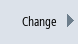

The network interface, active protocols and firewall exceptions of the company network are configured in the "Settings of the company network" window.
Setting | Description |
|---|---|
Gateway | If this value is not empty, the host specified there is used as the default gateway, which means that all IP packets that cannot be directly assigned are sent there for routing. |
DNS server | If DNS name servers are specified here (maximum three), then they must be used to resolve symbolic host names, i.e. at most of the points where an IP address is expected, a computer name can also be used instead. The name server setting is also sent to its DHCP clients (TCU, PG) via the DHCP server of the NCU, so that they can also work with symbolic names. |
Time server | Here you can specify up to three NTP servers (UDP/123) that can be used by the NTPD on the NCU for time synchronization. |
Host name | Here you can define a name for the local host. This manually assigned name takes priority over all other names. The host name is determined in the following order:
Because the host name is also used as DNS name, it must satisfy the corresponding requirements of the RFC:
|
Active protocols | Specifies which protocols are to be used in the company network. DCP (Discovery and Basic Configuration Protocol) and LLDP (Link Layer Discovery Protocol) are available for selection. |
Firewall exceptions | You can specify ports here that are to be enabled in the external network interface. |
| Port for the S7 communication |
| Port for the VNC access |
| Any further ports can be enabled here. The entry starts with the protocol name (TCP or UDP), followed by a slash '/' and the port number of the service to be enabled. Several entries are separated by a space. Example (enabling of the VNC servers): |
| Notice |
Security riskNote that opening the ports in the firewall can represent a security risk. Only enable the ports that you actually require. Note that every accessible service can have security gaps. |
1. | The network overview is open. | |
2. | Press the "Company network" softkey. The "Settings of the Company Network" window opens. | |
|  | 3. | Press the "Change" softkey to edit settings. |
See also:
Displaying the network overview